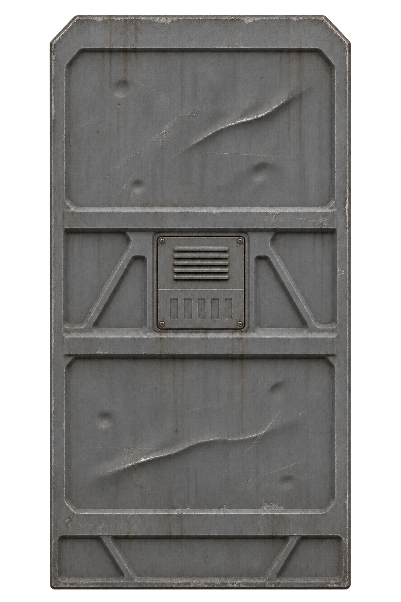
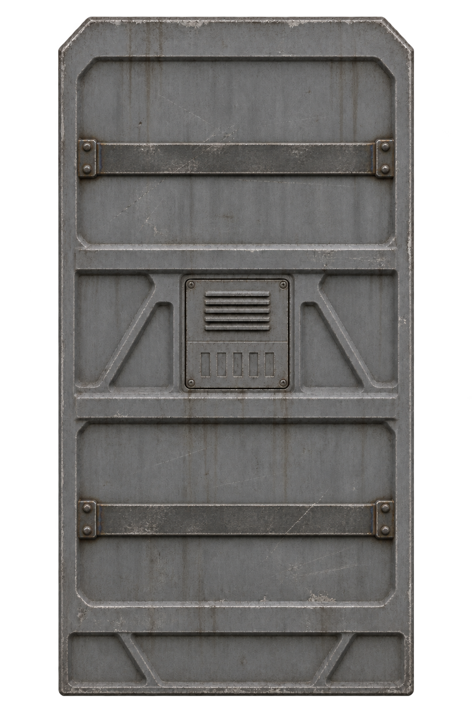
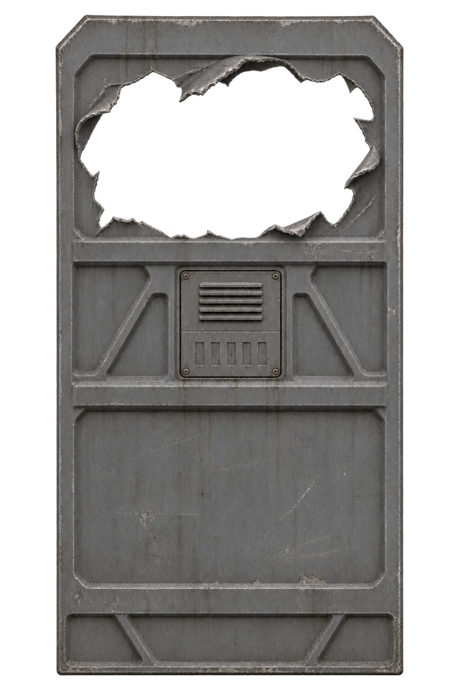
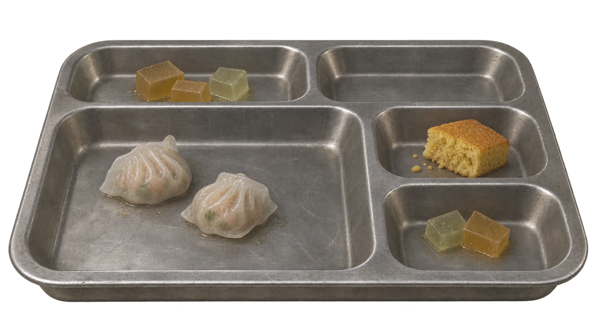
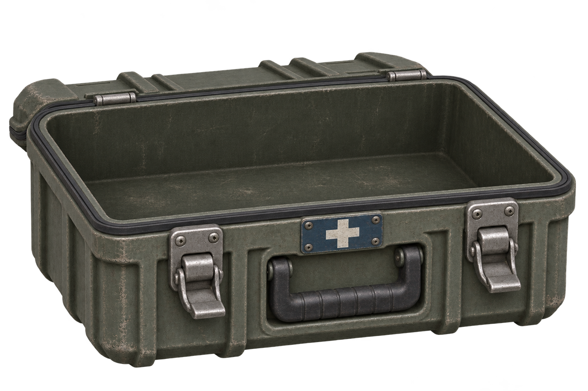
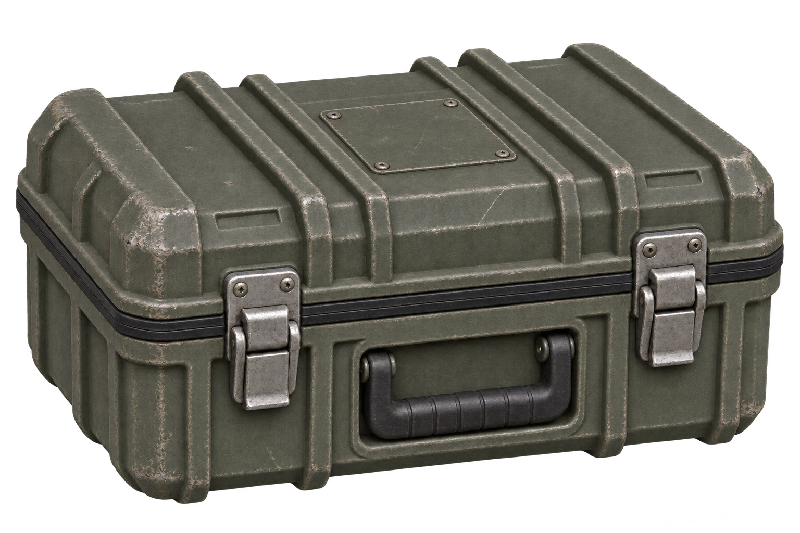
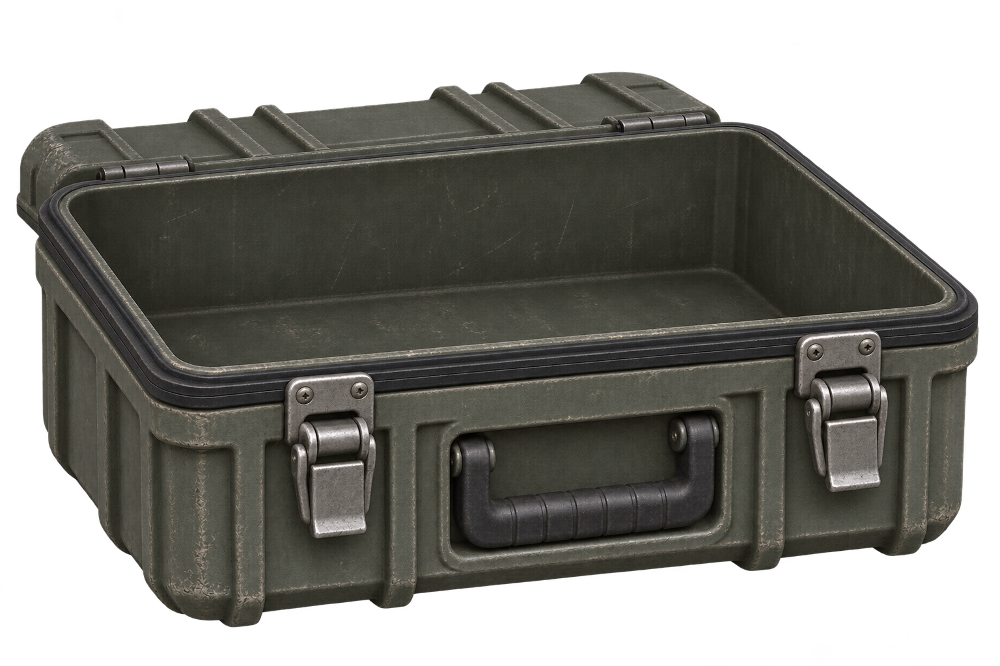

Battant endommagé
door-leaf-damaged1024 × 1536 · RGBA · 1 état statique
ALIENS (1986) · TANTALUS FRONTIER
Trois portes, trois caisses et un plateau garni. Ces nouvelles éditions prolongent les références V115 : 7 images ajoutées aux 123 du registre V116, sans modifier leur moteur de présentation.

door-leaf-damaged1024 × 1536 · RGBA · 1 état statique

door-leaf-reinforced1024 × 1536 · RGBA · 1 état statique

door-leaf-breached1024 × 1536 · RGBA · 1 état statique

meal-tray-food1671 × 941 · RGBA · 1 état statique

supply-case-medical-empty1536 × 1024 · RGBA · 1 état statique

supply-case-ammo-closed1536 × 1024 · RGBA · 1 état statique

supply-case-ammo-empty1536 × 1024 · RGBA · 1 état statique